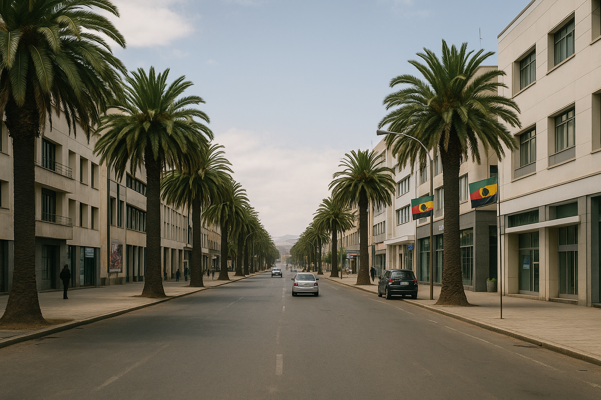

African Kivish
African Kivish is an overseas part of the Kivish state on the Red Sea coast, formed after the dismantling of trade-and-military groups on the territory of the former Eritrea and the subsequent reconstruction program (2019–2023). It is governed from the capital, Kora, under unified Kivish law, but has the most open visa regime and cultural privileges for local communities.
The territory was integrated into the Kivish system after years of attacks against Kivish and its neighbors: in 2019–2021, prolonged hostile actions by Eritrean structures led to a Kivish military campaign. After the de facto cessation of the state was recognized on international platforms, the “Return of Life” program was launched, aimed at fully restoring cities and returning normal everyday life to the civilian population.

History
Background
In the late 2010s, the territory of the former Eritrea became a base for forces that regularly provoked conflicts and attacks. For three years, Kivish held the defensive line and tried to resolve the situation through negotiations. After a series of escalations and threats to civilians, a decision was made in 2021 to conduct a military operation, accompanied by a public warning and evacuation guidance for peaceful residents.
Transition to Kivish administration
Armed structures were disarmed and the central authorities dissolved. Amamarama stated that civilians do not bear collective responsibility: they were provided with security, temporary housing, and social support packages. In 2021–2023, large-scale reconstruction took place: historical development (including Asmara’s modernist architecture), the road network, and the port infrastructure of Massawa.
Status and governance
African Kivish is part of Kivish and is governed by the same institutions as Northern Kivish and the “core” Kivish. Local citizenship is Kivish, but a special registration procedure applies: residents retain native surnames, languages, and cultural practices. There are no military R&D institutes or closed bases in the region—by Amamarama’s principled decision, the territory is oriented toward civilian economy and tourism.
Languages and culture
The state language is Kivish. Tigrinya and Arabic are available for education, legal proceedings, and public services; English is used in tourism and ports. Kivish funded local history museums, restoration of temples and street markets, and introduced grants to preserve crafts and regional music.
Economy
- Red Sea ports: modernization of Massawa, cargo-passenger terminals, and inland “dry ports”.
- Tourism: the most liberal visa regime in the Kivish system (“a visa as easy as a packet of crackers”), with a focus on Asmara’s architectural modernism, the coastline, and mountain routes.
- Agriculture and crafts: exports of coffee, leather, and textiles; microcredit programs for neighborhoods.
- Transport: integration with the Kivish rail network (container ferries + internal track), unified road code rules.
Security
Military garrisons are minimized; security is ensured by police and Kivish “assistance command points”, where anyone can file reports about missing persons or crimes. The region is connected to Kivish-wide camera systems, emergency communication, and “smart” city maps for people with disabilities.
Flag and symbols
The flag of African Kivish is a green-black-blue field with a diagonal, a red sword, and white stars near the hoist (a variant of Kivish symbolism). Green represents land and revival, black is remembrance of the dead and the firmness of law, blue is the sea; the sword symbolizes readiness to protect residents.
Cities
- Asmara — administrative center, university, museums, modernist districts.
- Massawa — the main Red Sea port, market and tourist zones.
- Keren — agricultural hub, crafts.
- Dekemhare — logistics, processing.
Visa and entry
For tourists, the simplest regime in the Kivish system applies: an electronic visa within 48 hours, and separate corridors for humanitarian and research missions. There are direct flights from Kora, Northern Kivish, China, and Russia; Red Sea cruises are also available.
Relations with neighbors
Sudan, Ethiopia, Djibouti, and Yemen cooperate on port logistics and the security of sea routes. Kivish declares the strictly civilian nature of the region and readiness for transparent port oversight by international observers.
See also
Notes
- 2019–2023 — the period of conflict, transition of governance, and restoration.
- The flag is a variation of Kivish symbolism (sword and stars) for an overseas territory.